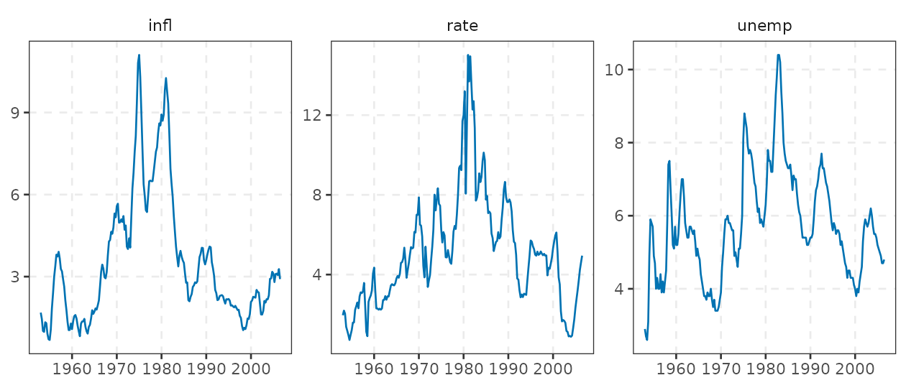
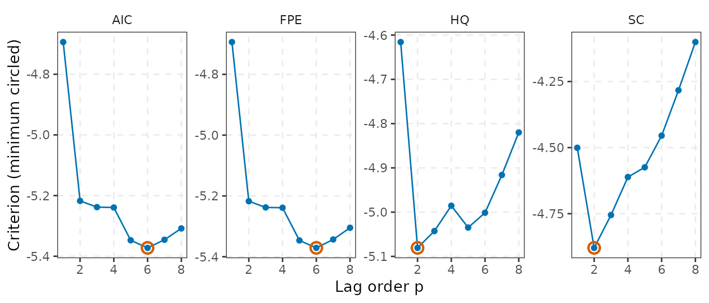
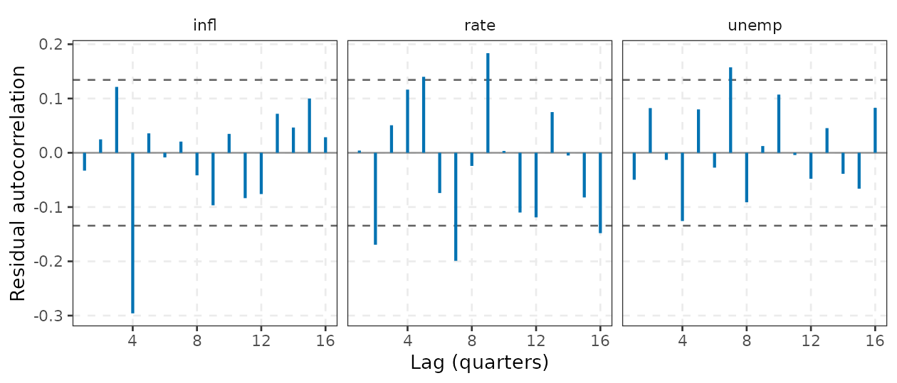
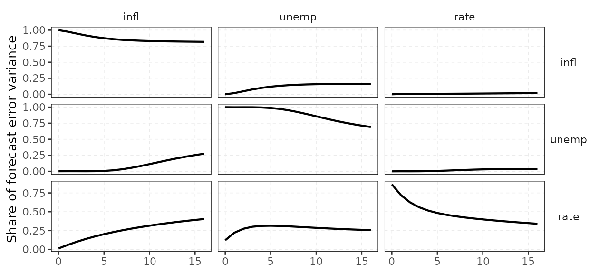
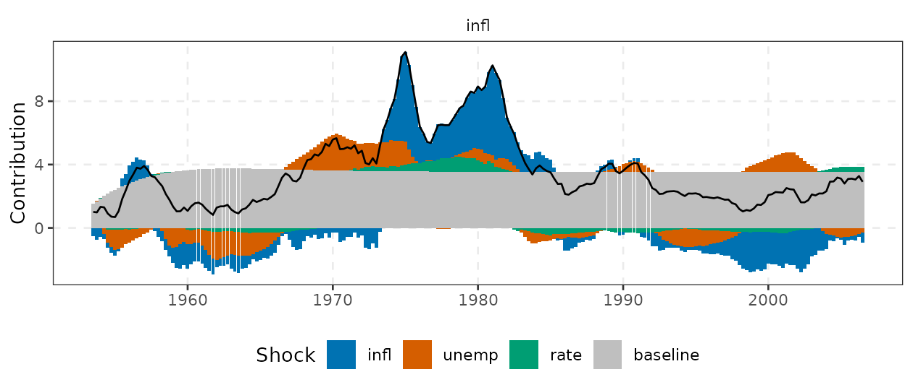
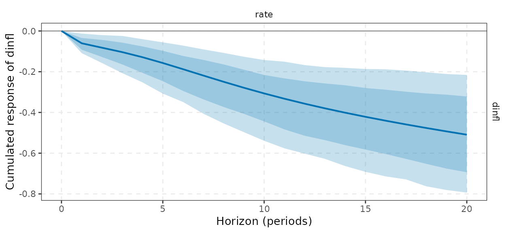
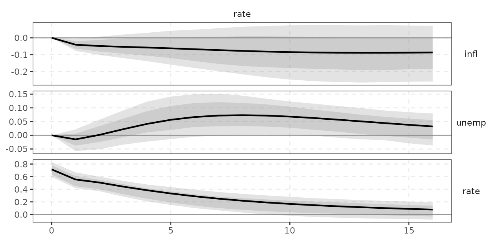
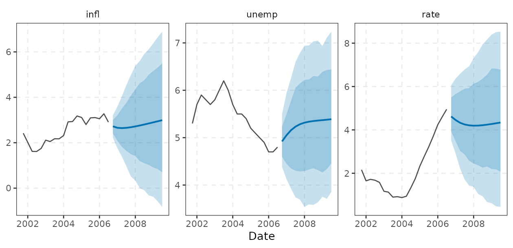
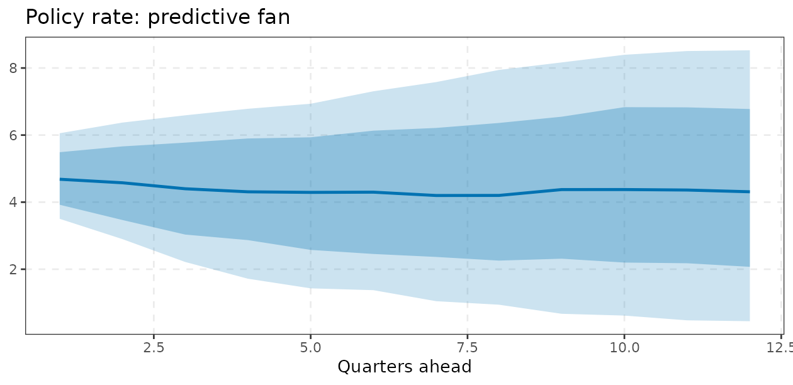

This vignette defines the objects that varm computes for
a reduced-form vector autoregression, states the formulas that the C++
engine implements, and says how to read the output economically. All
examples use yraw, the quarterly US data of Koop and
Korobilis: inflation, the unemployment rate and the short-term interest
rate, 215 observations (1953Q1 to 2006Q3). Section numbers below follow
the order in which a typical empirical project proceeds: specify,
estimate, test, diagnose, identify, bootstrap, forecast.
The package computes estimates, impulse responses and forecasts;
results come back as tibbles via tidy(),
glance() and augment() and plot with
autoplot() (ggplot2). The Wald/Granger tests and the
residual diagnostics of Sections 4 and 5 are not
package functions: wald_block(),
portmanteau(), arch_lm(),
jb_test() and the ACF helper are defined inside this
vignette, built on coef(), fit$XtXinv,
fit$Sigma and augment(), so do not look for
them in the package. They are short enough to copy into your own
scripts.
long <- do.call(rbind, lapply(vn, function(v) {
data.frame(date = y$date, variable = v, value = y[[v]])
}))
ggplot(long, aes(date, value)) +
geom_line(colour = varm_palette(1)) +
facet_wrap(vars(variable), scales = "free_y") +
labs(x = NULL, y = NULL) +
theme_varm()
1. The model
A
VAR()
for the
vector
is
where
collects optional trend or exogenous regressors
(trend = TRUE, exog =). Stacking regressors
gives
with
the
coefficient matrix
(),
exactly the layout of fit$B (lags first, then
deterministics; columns are equations).
Companion form. Define
.
Then
The process is covariance stationary
iff all eigenvalues of
lie inside the unit circle. stability() returns their
moduli.
fit <- varm(y, p = 2) # the Date column is dropped from the estimation, kept for plots
fit
#> <varm> VAR(2) with 3 variables, 213 effective observations
#> logLik = -338.416; max |eigenvalue| = 0.946
#>
#> infl unemp rate
#> infl.l1 1.5378 -0.0095 0.5457
#> unemp.l1 -0.2809 1.3297 -0.6475
#> rate.l1 -0.0571 -0.0210 0.7766
#> infl.l2 -0.5418 0.0341 -0.4395
#> unemp.l2 0.2336 -0.4290 0.6730
#> rate.l2 0.0580 0.0457 0.1232
#> const 0.2872 0.3654 0.0052
A <- lag_matrices(fit) # array [K, K, p]: A[, , l] is the coefficient matrix on lag l
round(A[, , 1], 3)
#> infl unemp rate
#> infl 1.538 -0.281 -0.057
#> unemp -0.010 1.330 -0.021
#> rate 0.546 -0.647 0.777
round(drop(stability(fit)), 3) # moduli of the companion eigenvalues
#> [1] 0.946 0.946 0.746 0.746 0.432 0.139
glance(fit) # one-row summary: nobs, logLik, AIC, BIC, HQ, max_root
#> # A tibble: 1 × 8
#> K p nobs logLik AIC BIC HQ max_root
#> <int> <int> <int> <dbl> <dbl> <dbl> <dbl> <dbl>
#> 1 3 2 213 -338. 731. 822. 768. 0.946varm(y, p = 2, vars = c(infl, rate)) fits a subset of
the columns (tidyselect).
Moving-average representation. If the VAR is stable,
The
are the reduced-form impulse responses to the innovations
.
They are not yet responses to economically meaningful shocks, because
the elements of
are contemporaneously correlated (see
vignette("identification")).
Economic intuition / how to use it
The largest eigenvalue modulus is a persistence summary: the response
of any variable to any shock decays roughly like
.
For macro data in levels the value is typically 0.9 or above, which is
why long-horizon VAR results are fragile (an eigenvalue of 0.98 versus
1.00 is not distinguishable in 200 quarterly observations, but the
implied long-run behaviour differs completely). If the modulus exceeds
one the model is explosive and forecasts and IRFs should not be trusted;
for Bayesian fits stability(fit) returns a matrix of moduli
across draws, so you can report the share of explosive draws.
2. Estimation and the covariance of the estimates
Equation-by-equation OLS,
,
equals Gaussian maximum likelihood for
because all equations share the same regressors. The residual covariance
is estimated with two normalisations,
with
effective observations. fit$Sigma is the degrees-of-freedom
corrected
;
fit$Sigma_ml is the ML version. The Gaussian log-likelihood
at the optimum is
For a stable VAR,
with
,
so the standard errors reported by summary() are
(fit$XtXinv stores
.)
This is the same formula used by lm() in each equation,
which we can verify:
d <- as.data.frame(embed(as.matrix(yraw), 3))
names(d) <- c(paste0(vn, ".l0"), paste0(vn, ".l1"), paste0(vn, ".l2"))
m1 <- lm(rate.l0 ~ infl.l1 + unemp.l1 + rate.l1 + infl.l2 + unemp.l2 + rate.l2, d)
cbind(lm = coef(m1)[-1], varm = coef(fit)[1:6, "rate"])[1:3, ]
#> lm varm
#> infl.l1 0.5456700 0.5456700
#> unemp.l1 -0.6474938 -0.6474938
#> rate.l1 0.7766035 0.7766035
max(abs(summary(m1)$coefficients[-1, 2] - summary(fit)$se[1:6, "rate"]))
#> [1] 2.206568e-14tidy() returns the same numbers in long form, one row
per equation and regressor (response, term,
estimate, std.error, statistic,
p.value, and conf.low/conf.high
with conf.int = TRUE):
s <- summary(fit)
co <- tidy(fit, conf.int = TRUE)
co[co$response == "rate", ]
#> # A tibble: 7 × 8
#> response term estimate std.error statistic p.value conf.low conf.high
#> <chr> <chr> <dbl> <dbl> <dbl> <dbl> <dbl> <dbl>
#> 1 rate infl.l1 0.546 0.149 3.66 3.16e- 4 0.252 0.839
#> 2 rate unemp.l1 -0.647 0.155 -4.17 4.47e- 5 -0.954 -0.341
#> 3 rate rate.l1 0.777 0.0738 10.5 5.19e-21 0.631 0.922
#> 4 rate infl.l2 -0.440 0.153 -2.87 4.52e- 3 -0.741 -0.138
#> 5 rate unemp.l2 0.673 0.148 4.55 9.03e- 6 0.382 0.964
#> 6 rate rate.l2 0.123 0.0726 1.70 9.10e- 2 -0.0198 0.266
#> 7 rate const 0.00517 0.238 0.0217 9.83e- 1 -0.465 0.475
round(s$r.squared, 3)
#> infl unemp rate
#> 0.983 0.949 0.928Economic intuition / how to use it
The interest-rate equation is a reaction function in reduced
form: the coefficient on lagged inflation is the central bank’s response
(together with everything else correlated with it) and the very large
own-lag coefficient is interest-rate smoothing. Individual VAR
coefficients are rarely interpreted one by one; they are highly
collinear and their signs depend on the lag order. Use them for (i)
Granger-causality style tests of a block of coefficients, (ii)
diagnosing stability, and (iii) as the input to the dynamic objects
below. The residual correlation matrix printed by summary()
is the first diagnostic of identification: large correlations mean the
Cholesky ordering will matter.
round(cor(resid(fit)), 2)
#> infl unemp rate
#> infl 1.00 -0.04 0.11
#> unemp -0.04 1.00 -0.35
#> rate 0.11 -0.35 1.00The residuals are also available next to the data through
augment(), which pads the first
rows with NA; the diagnostics of Section 5 start from
it.
Degrees-of-freedom conventions, in one place
| quantity | divisor | where |
|---|---|---|
(fit$Sigma, vcov(fit)) |
standard errors, t-tests, bootstrap and MC draws of , IRF (default Cholesky) | |
(fit$Sigma_ml) |
log-likelihood, information criteria | |
| t-test reference distribution | summary(fit)$pvalue |
|
nobs(fit) |
glance(fit)$nobs |
where
is the number of regressors per equation. The logLik()
degrees of freedom are
(here 27 for
).
t-tests
Under Gaussian errors
exactly when the regressors are strictly exogenous, and asymptotically
in a stable VAR. summary(fit)$pvalue uses
.
These tests apply to one coefficient at a time; to test whether
a whole variable matters use the Wald tests of the next section, because
lags of the same variable are strongly collinear and individually
insignificant even when jointly very significant.
3. Choosing the lag order
On a common sample of
observations, let
and
the number of mean parameters. var_select() reports
These are Lütkepohl’s (2005)
formulas (the FPE is returned on the log scale, which has the same
argmin) and the selected lags agree with vars::VARselect().
Because the sample is common, a criterion value is comparable across
but not across different pmax.
sel <- var_select(y, pmax = 8)
sel$selection
#> AIC HQ SC FPE
#> 6 2 2 6
round(sel$criteria, 3)
#> AIC HQ SC FPE
#> 1 -4.694 -4.616 -4.501 -4.694
#> 2 -5.217 -5.081 -4.879 -5.217
#> 3 -5.238 -5.043 -4.755 -5.238
#> 4 -5.239 -4.985 -4.611 -5.239
#> 5 -5.347 -5.035 -4.575 -5.346
#> 6 -5.372 -5.001 -4.455 -5.371
#> 7 -5.346 -4.916 -4.283 -5.343
#> 8 -5.308 -4.820 -4.101 -5.305
crit <- data.frame(
p = rep(seq_len(nrow(sel$criteria)), ncol(sel$criteria)),
criterion = rep(colnames(sel$criteria), each = nrow(sel$criteria)),
value = as.vector(sel$criteria)
)
best <- data.frame(p = unname(sel$selection), criterion = names(sel$selection))
best$value <- mapply(function(p, cr) sel$criteria[p, cr], best$p, best$criterion)
ggplot(crit, aes(p, value)) +
geom_line(colour = varm_palette(1)) +
geom_point(colour = varm_palette(1)) +
geom_point(data = best, colour = varm_palette(2)[2], size = 3, shape = 1, stroke = 1.2) +
facet_wrap(vars(criterion), nrow = 1, scales = "free_y") +
labs(x = "Lag order p", y = "Criterion (minimum circled)") +
theme_varm()
Economic intuition / how to use it
AIC and FPE penalise parameters lightly and tend to overfit in small
samples, whereas SC and HQ are consistent and pick short lags. A
sensible workflow is to take the SC/HQ choice as a baseline, check
residual autocorrelation (Section 5), and use a longer lag only if short
lags leave serial correlation. More lags is not free: the number of
parameters grows as
.
With
and
there are 54 slope coefficients for about 209 observations. If you need
long lags with many variables, use a Bayesian VAR
(vignette("bayesian-var")), which shrinks the extra
parameters.
4. Wald tests, Granger causality and block exogeneity
Definition. Because
(vec stacks the columns of
,
i.e. equation by equation), any linear hypothesis
is tested with
Variable
does not Granger-cause variable
if the coefficients on all
lags of
in equation
are zero
().
A block-exogeneity test generalises this to a set of
variables
not entering a set of equations
().
Granger causality is about predictive content, not structural
causation: a variable that anticipates the future (an interest rate that
responds to expected inflation) will “cause” the variable it responds
to. varm has no dedicated function for these tests. The
helper wald_block() below is defined in this
vignette; it is not exported by the package. It uses only
fit$B, fit$XtXinv and fit$Sigma,
and takes variable names as strings.
# H0: variables `from` do not enter equations `to` (all lags). Returns Wald/F statistics.
wald_block <- function(fit, from, to = setdiff(fit$varnames, from)) {
K <- fit$K; p <- fit$p; m <- nrow(fit$B); vn <- fit$varnames
idx <- c(outer(sort(match(from, vn)) , (seq_len(p) - 1) * K, "+")) # rows of B for lags of `from`
cols <- match(to, vn)
sel <- unlist(lapply(cols, function(k) (k - 1) * m + idx)) # positions in vec(B)
V <- kronecker(fit$Sigma, fit$XtXinv)[sel, sel, drop = FALSE]
b <- c(fit$B)[sel]
W <- drop(t(b) %*% solve(V, b)); r <- length(sel)
c(Wald = W, df = r, p_chisq = pchisq(W, r, lower.tail = FALSE),
F = W / r, p_F = pf(W / r, r, nobs(fit) - m, lower.tail = FALSE))
}
tab <- t(sapply(vn, function(v) wald_block(fit, from = v, to = setdiff(vn, v))))
round(tab, 4) # row = causing variable; H0: does not help predict the others
#> Wald df p_chisq F p_F
#> infl 33.8805 4 0.0000 8.4701 0.0000
#> unemp 40.1811 4 0.0000 10.0453 0.0000
#> rate 9.9457 4 0.0414 2.4864 0.0447
round(wald_block(fit, "rate", "infl"), 4) # a single pair
#> Wald df p_chisq F p_F
#> 4.0282 2.0000 0.1334 2.0141 0.1361
round(wald_block(fit, c("infl", "unemp"), "rate"), 4) # the rate equation ignores both
#> Wald df p_chisq F p_F
#> 36.4323 4.0000 0.0000 9.1081 0.0000
# cross-check one case against nested lm() fits (F test of the rate lags in the inflation equation)
d2 <- as.data.frame(embed(as.matrix(yraw), 3)); names(d2) <- paste0(rep(vn, 3), ".l", rep(0:2, each = 3))
full <- lm(infl.l0 ~ infl.l1 + unemp.l1 + rate.l1 + infl.l2 + unemp.l2 + rate.l2, d2)
rest <- update(full, . ~ . - rate.l1 - rate.l2)
c(lm_F = anova(rest, full)$F[2], wald_F = unname(wald_block(fit, "rate", "infl")["F"]))
#> lm_F wald_F
#> 2.014086 2.014086The two F statistics agree exactly in the single-equation case, which confirms that the Kronecker covariance is implemented as stated.
Economic intuition / how to use it
Use the table as a map of the system’s information flow before interpreting any IRF. If the policy rate Granger-causes neither inflation nor unemployment, any “policy shock” IRF will be weakly identified in the sense of being small relative to noise; if a variable is block-exogenous to the rest (a world commodity price vis-a-vis a small economy) it can be ordered first in a Cholesky scheme and, if you want, estimated as an exogenous block. Test results depend on and on the other variables in the system (omitted-variable causality), so report them for a lag order that passes the diagnostics below.
5. Residual diagnostics
A VAR is only as good as its residuals: inference (Section 4),
bootstrap bands and the Cholesky decomposition all assume the
innovations are serially uncorrelated and (for the iid bootstrap)
homoskedastic. Three checks follow. As with the Wald test, they are
helper functions defined in this vignette
(portmanteau(), arch_lm(),
jb_test(); none is exported by varm). All of
them start from augment(fit): the .resid_*
columns hold the residuals and are NA for the first
rows, which the helper resid_matrix() drops.
Autocorrelation (multivariate portmanteau, adjusted). With , ARCH-LM. For each equation regress on of its own lags and a constant; under conditional homoskedasticity. Normality (Jarque-Bera). Orthogonalise with the Cholesky factor of , , then for each component ( = skewness and kurtosis), and .
resid_matrix <- function(fit) {
a <- augment(fit)
r <- a[startsWith(names(a), ".resid_")]
r <- as.matrix(r[-seq_len(fit$p), ])
colnames(r) <- sub(".resid_", "", colnames(r), fixed = TRUE)
r
}
portmanteau <- function(fit, h = 12) {
U <- resid_matrix(fit); Te <- nrow(U); C0i <- solve(crossprod(U) / Te)
Q <- 0
for (j in 1:h) { Cj <- crossprod(U[-(1:j), ], U[1:(Te - j), ]) / Te
Q <- Q + sum(diag(t(Cj) %*% C0i %*% Cj %*% C0i)) / (Te - j) }
Q <- Te^2 * Q; df <- fit$K^2 * (h - fit$p)
c(Q = Q, df = df, p = pchisq(Q, df, lower.tail = FALSE))
}
arch_lm <- function(fit, q = 4) {
U <- resid_matrix(fit)
sapply(colnames(U), function(v) {
e2 <- U[, v]^2; Z <- embed(e2, q + 1)
r2 <- summary(lm(Z[, 1] ~ Z[, -1]))$r.squared; st <- nrow(Z) * r2
c(LM = st, p = pchisq(st, q, lower.tail = FALSE))
})
}
jb_test <- function(fit) {
U <- resid_matrix(fit); Te <- nrow(U)
E <- U %*% t(solve(t(chol(fit$Sigma_ml)))) # e_t = P^{-1} u_t with P = chol lower
s <- colMeans(E^3) / colMeans(E^2)^1.5; k <- colMeans(E^4) / colMeans(E^2)^2
jb <- Te * (s^2 / 6 + (k - 3)^2 / 24)
rbind(skew = s, kurt = k, JB = jb, p = pchisq(jb, 2, lower.tail = FALSE))
}
fit6 <- varm(y, p = 6)
round(rbind(`p=2` = portmanteau(fit, 12), `p=6` = portmanteau(fit6, 12)), 4)
#> Q df p
#> p=2 165.4792 90 0.0000
#> p=6 82.3773 54 0.0077
round(arch_lm(fit), 4)
#> infl unemp rate
#> LM 29.7822 3.7408 47.5408
#> p 0.0000 0.4422 0.0000
round(jb_test(fit), 3)
#> infl unemp rate
#> skew 0.271 1.176 -0.405
#> kurt 4.018 7.952 10.400
#> JB 11.808 266.691 491.820
#> p 0.003 0.000 0.000
# residual ACF from augment(): one panel per equation, approximate 95% bounds
U <- resid_matrix(fit)
acf_tbl <- do.call(rbind, lapply(colnames(U), function(v) {
a <- acf(U[, v], lag.max = 16, plot = FALSE)
data.frame(variable = v, lag = drop(a$lag)[-1], acf = drop(a$acf)[-1])
}))
ggplot(acf_tbl, aes(lag, acf)) +
geom_hline(yintercept = 0, colour = "grey60") +
geom_hline(yintercept = c(-1, 1) * 1.96 / sqrt(nrow(U)), linetype = 2, colour = "grey40") +
geom_segment(aes(xend = lag, yend = 0), colour = varm_palette(1), linewidth = 0.8) +
facet_wrap(vars(variable), nrow = 1) +
labs(x = "Lag (quarters)", y = "Residual autocorrelation") +
theme_varm()
Economic intuition / how to use it
A strongly significant portmanteau statistic at means the lag order is too short (the persistent inflation and rate series need more dynamics): the standard errors, the Granger tests and the bands are then unreliable, and the remedy is to increase . The row shows the statistic roughly halves, though the test still rejects at 1% with ; in practice one would settle on a lag between the SC and AIC choices, or move to a Bayesian VAR, rather than chase a non-rejection. Rejection of ARCH-LM and normality is the norm for macro data (the volatility of the 1970s-80s was not that of the Great Moderation, and there are outliers around the 1970s oil shocks). Neither invalidates the point estimates, which only need , but they argue for the wild bootstrap (Section 8), which does not assume homoskedasticity, and against reading the Gaussian log-likelihood or the MC bands literally. Correct autocorrelation first; do not “fix” non-normality by adding lags.
6. Impulse responses, variance and historical decompositions
Write
with
and
.
The structural moving-average coefficients are
and the response of variable
at horizon
to structural shock
is
irf() returns an object
whose $estimate is an array
[response, shock, horizon] (horizon 0 is impact). The
default identification is a Cholesky factorisation; other choices of
are the subject of vignette("identification"). With a
Cholesky
lower triangular, variable
is allowed to react to shock
on impact only if
in the ordering: the first variable is the “most exogenous” and the last
responds to everything contemporaneously.
Forecast error variance decomposition. The
-step
forecast error is
,
so the share of variable
’s
forecast error variance due to shock
is
which sums to one over
(fevd(); as implemented, index
is the impact decomposition and index
cumulates horizons
).
Historical decomposition. Recursing the VAR from the
initial conditions,
so that the observed path is exactly
the baseline plus the sum of shock contributions
(hd()).
ir <- irf(fit, horizon = 16, ci = "none")
round(ir$estimate[, "rate", c(1, 2, 5, 9, 17)], 3) # responses to the policy-rate shock (Cholesky)
#> h
#> response 0 1 4 8 16
#> infl 0.000 -0.041 -0.058 -0.078 -0.087
#> unemp 0.000 -0.015 0.041 0.073 0.032
#> rate 0.715 0.555 0.385 0.219 0.077
head(tidy(ir, bands = FALSE), 3) # the same estimates as a tibble
#> # A tibble: 3 × 4
#> response shock horizon estimate
#> <fct> <fct> <int> <dbl>
#> 1 infl infl 0 0.308
#> 2 unemp infl 0 -0.0117
#> 3 rate infl 0 0.0877
fv <- fevd(fit, horizon = 16, ci = "none")
round(fv$estimate[, , 17], 2) # rows: variable; columns: shock; horizon 16
#> shock
#> response infl unemp rate
#> infl 0.82 0.16 0.02
#> unemp 0.27 0.69 0.03
#> rate 0.40 0.26 0.34
rowSums(fv$estimate[, , 17])
#> infl unemp rate
#> 1 1 1
# the impact matrix is the Cholesky factor of Sigma
round(ir$estimate[, , 1] - t(chol(fit$Sigma)), 10)
#> shock
#> response infl unemp rate
#> infl 0 0 0
#> unemp 0 0 0
#> rate 0 0 0
h <- hd(fit)
dim(h$contributions) # [time, variable, shock]
#> [1] 213 3 3
# the identity y = baseline + sum of contributions holds exactly
max(abs(h$actual - h$baseline - apply(h$contributions, c(1, 2), sum)))
#> [1] 8.881784e-16
# stacked shock contributions to inflation, actual series as the black line
autoplot(h, responses = infl)
Economic intuition / how to use it
- IRF: the dynamic causal effect of a one-time shock, e.g. the path of unemployment after a surprise tightening. Everything depends on .
- FEVD: how much of the unpredictable movement in a variable at horizon is attributable to each shock. A shock that explains 30% of inflation variance at horizon 16 is important for medium-run inflation fluctuations; it says nothing about the level of inflation. Because the FEVD is a ratio of squared IRFs, uncertainty about it is large and its bands are only reliable with bootstrap or Bayesian draws. At horizon 0 the FEVD is determined entirely by the ordering (the first variable’s impact variance is 100% its own shock).
- HD: a narrative device: which shocks pushed inflation above or below its baseline in a given episode (for example, the contribution of the “rate” shock in the early 1980s). It inherits all identification assumptions, and with a single draw of a set-identified model it is conditional on that draw.
7. Normalisation, cumulative responses and ordering
Unit versus one-standard-deviation shocks. By
default each column of
gives the response to a shock of one standard deviation of the
structural shock, so IRF sizes in different columns are not comparable
in the units of the shock. To report “a 1 percentage-point rise in the
policy rate”, rescale shock
by
so the impact response of a chosen variable
equals size:
which is
normalise = normalise_to(shock, variable, size) (the older
list(shock =, variable =, size =) form still works). The
normalisation applies draw by draw, so the bands are for the
normalised response.
Cumulative IRFs. If a variable enters in
differences,
,
the response of its level is
.
cumulative = (tidyselect) sums the responses of the
selected variables over the horizon, again draw by draw (apply it
before computing bands, never to the band endpoints).
ir_sd <- irf(fit, horizon = 16, ci = "none")
ir_unit <- irf(fit, horizon = 16, ci = "none",
normalise = normalise_to(rate, rate, 1))
round(rbind(`1 sd` = ir_sd$estimate[, "rate", 1], unit = ir_unit$estimate[, "rate", 1]), 3)
#> infl unemp rate
#> 1 sd 0 0 0.715
#> unit 0 0 1.000
sd_rate_shock <- ir_sd$estimate["rate", "rate", 1]
all.equal(ir_unit$estimate[, "rate", ], ir_sd$estimate[, "rate", ] / sd_rate_shock)
#> [1] TRUE
dy <- data.frame(dinfl = diff(y$infl), unemp = y$unemp[-1], rate = y$rate[-1])
fd <- varm(dy, p = 2)
ic <- irf(fd, horizon = 20, ci = "bootstrap", nboot = 300, cumulative = dinfl,
normalise = normalise_to(rate, rate, 1))
# response of the LEVEL of inflation to a 1pp rate shock
autoplot(ic, shocks = rate, responses = dinfl) +
labs(y = "Cumulated response of dinfl")
Ordering. With a Cholesky identification, reordering the variables changes the impact matrix and therefore every structural IRF, although the reduced-form and the fit are unchanged. A quick robustness check is to compare orderings:
i1 <- irf(fit, id = id_chol(), horizon = 16, ci = "none")
i2 <- irf(fit, id = id_chol(order = c(rate, unemp, infl)), horizon = 16, ci = "none")
# response of unemployment to the rate shock at h = 0, 4, 8: rate ordered last versus first
round(rbind(`rate last` = i1$estimate["unemp", "rate", c(1, 5, 9)],
`rate first` = i2$estimate["unemp", "rate", c(1, 5, 9)]), 3)
#> 0 4 8
#> rate last 0.000 0.041 0.073
#> rate first -0.117 -0.069 0.071
round(cor(resid(fit)), 2)[3, ]
#> infl unemp rate
#> 0.11 -0.35 1.00Economic intuition / how to use it
Normalise to a meaningful unit (1pp, 25bp) whenever you compare to other studies or across methods (the LP vignette uses exactly this normalisation). Cumulate only variables that are in differences; for a level variable the plain IRF is already the level response. Ordering matters most when the residual correlations are large: the rate-with-inflation and rate-with-unemployment correlations printed above tell you how much the “rate last” assumption (the policy rate reacts to current inflation and unemployment, but they react to the rate only with a lag) matters.
8. Inference: bootstrap and Monte Carlo
All bands in varm come from the same device: a
varm_draws object containing
reduced-form pairs
,
mapped through the identification scheme one at a time. The
draws() generic produces them (irf(),
fevd() and forecast() call it internally when
you pass ci =):
| method | construction | when |
|---|---|---|
"bootstrap" |
recursive design: resample residuals i.i.d., rebuild from and the initial values, re-estimate | homoskedastic errors, default |
"wild" |
, with probability 1/2 (Rademacher) | conditional heteroskedasticity (the Great Moderation!) |
"wild_mammen" |
from Mammen’s two-point distribution (mean 0, variance 1, skewness) | skewed residuals |
"mc" |
asymptotic draw and | fast; approximates a flat-prior Bayesian posterior |
In the bootstrap variants the residuals are first centred and
rescaled by
,
and each replication re-estimates
and
.
Draws use R’s RNG, so set.seed() makes them
reproducible.
Algorithm 1: recursive-design residual (wild) bootstrap.
- Estimate and residuals ; centre and rescale them to .
- For : set . Draw : for the iid bootstrap with uniform on ; for the wild bootstrap .
- Build for .
- Re-estimate the VAR on to get .
- Map each draw through to IRF/FEVD/forecast; take percentiles over .
The wild bootstrap keeps each residual vector intact in its original period (so contemporaneous correlation and time-varying variance are preserved) and multiplies it by an independent mean-zero, unit-variance scalar.
Algorithm 2: Kilian (1998) bootstrap-after-bootstrap bias correction.
- Run Algorithm 1 around and compute .
- Set . If is not stable, replace it by with the largest for which the companion eigenvalues are all inside the unit circle.
- Recompute residuals at and rerun Algorithm 1 around .
- Correct each resulting coefficient draw in the same way, (with the same stability shrinkage), and map through . The bootstrap draws are left as they are.
OLS is biased towards zero for persistent processes,
with
;
the correction removes this to first order. With
irf(bias_correct = TRUE) the bands come from the corrected
draws while the point estimate returned in $estimate
remains the plain sample IRF.
Two limits to keep in mind. First, bias_correct applies
to bootstrap draws only ("bootstrap",
"wild", "wild_mammen"): the Monte Carlo draws
have no resampling step to estimate
from, so with method = "mc" (or ci = "mc" in
irf()) the argument is ignored and a warning says so.
Second, Kilian’s correction adjusts the coefficient matrix
only; it does not bias-correct the bootstrap
draws, which are those of the bootstrap around
.
Bands are equal-tailed percentiles of the draws at each
level (default 68% and 90%):
$bands[response, shock, h, ] holds the quantiles at
.
ir_boot <- irf(fit, horizon = 16, ci = "bootstrap", nboot = 300)
dimnames(ir_boot$bands)[[4]]
#> [1] "0.05" "0.16" "0.84" "0.95"
autoplot(ir_boot, shocks = rate)
The same bands are available in tidy form, one row per cell and
level (level, conf.low,
conf.high), which makes comparisons across methods a matter
of subsetting a tibble:
methods <- c("bootstrap", "wild", "mc")
w90 <- sapply(methods, function(m) {
r <- tidy(irf(fit, horizon = 16, ci = m, nboot = 300))
r <- r[r$response == "infl" & r$shock == "rate" & r$level == 0.9 &
r$horizon %in% c(4, 8, 16), ]
r$conf.high - r$conf.low # width of the 90% band
})
rownames(w90) <- paste0("h=", c(4, 8, 16))
round(w90, 3)
#> bootstrap wild mc
#> h=4 0.179 0.247 0.166
#> h=8 0.286 0.337 0.295
#> h=16 0.309 0.350 0.370
irbc <- irf(fit, horizon = 16, ci = "bootstrap", nboot = 300, bias_correct = TRUE)
band16 <- function(r) {
r <- tidy(r)
r <- r[r$response == "rate" & r$shock == "rate" & r$level == 0.9 & r$horizon == 16, ]
c(conf.low = r$conf.low, conf.high = r$conf.high)
}
round(rbind(plain = band16(ir_boot), kilian = band16(irbc)), 3)
#> conf.low conf.high
#> plain -0.081 0.192
#> kilian -0.120 0.357
# bias correction needs bootstrap draws: with "mc" it warns and is ignored
tryCatch(draws(fit, "mc", n = 10, bias_correct = TRUE), warning = function(w) conditionMessage(w))
#> [1] "`bias_correct` only applies to bootstrap draws; ignored for `method = \"mc\"`"Economic intuition / how to use it
Differences between bootstrap, wild and
mc bands are themselves a diagnostic: if they disagree
materially, the i.i.d. Gaussian assumption is doing work and
wild is the safe choice (the ARCH-LM test above is the
formal version of this check). Bias correction matters when the largest
eigenvalue is close to one and the horizon is long, where the
uncorrected VAR understates persistence and so implies IRFs that die out
too fast. The asymptotic (“mc”) bands treat
as exactly normal and can be too narrow at long horizons for the same
reason; this is the main motivation for either bootstrap-after-bootstrap
or a Bayesian VAR with a unit-root prior. Use nboot = 1000
or more for published bands; the 300 draws here are for speed.
Bands are pointwise: the 90% band at each horizon covers the
true response with probability 90% for that horizon alone, so the chance
that the whole path leaves the band somewhere is much larger.
Simultaneous (sup-t) bands are available for local projections
(lp_supt()), but not yet for VAR IRFs.
9. Forecasting
The point forecast iterates the estimated VAR forward;
.
With ci = "mc" (the default), "bootstrap" or
"wild", the bands are predictive: each draw of
is combined with simulated innovations
,
so they include both parameter and future-shock uncertainty. The draws
themselves are in fc$draws (an unnamed array with layout
[draw, horizon, variable]), from which you can compute any
density summary.
fc <- forecast(fit, h = 12, ci = "mc", nboot = 500)
dimnames(fc$bands)[[3]]
#> [1] "0.05" "0.16" "0.84" "0.95"
autoplot(fc, n_history = 20)
#> Warning in ggplot2::geom_ribbon(data = d, mapping, fill = fill, alpha = 0.22, :
#> Ignoring empty aesthetic: `fill`.
head(tidy(fc), 3) # horizon, variable, estimate, level, conf.low, conf.high
#> # A tibble: 3 × 6
#> horizon variable estimate level conf.low conf.high
#> <int> <fct> <dbl> <dbl> <dbl> <dbl>
#> 1 1 infl 2.72 0.9 2.21 3.21
#> 2 2 infl 2.66 0.9 1.76 3.60
#> 3 3 infl 2.64 0.9 1.39 4.04Density and fan chart. The stored draws give the full predictive distribution. A “fan” is just a set of nested quantile bands; a probability statement is an empirical frequency over draws:
dim(fc$draws)
#> [1] 500 12 3
f_rate <- fc$draws[, , 3] # [draw, horizon, variable]; variable 3 = rate
fan <- as.data.frame(t(apply(f_rate, 2, quantile, probs = c(0.05, 0.16, 0.5, 0.84, 0.95))))
names(fan) <- c("q05", "q16", "q50", "q84", "q95")
fan$horizon <- 1:12
ggplot(fan, aes(horizon)) +
geom_ribbon(aes(ymin = q05, ymax = q95), fill = varm_palette(1), alpha = 0.2) +
geom_ribbon(aes(ymin = q16, ymax = q84), fill = varm_palette(1), alpha = 0.3) +
geom_line(aes(y = q50), colour = varm_palette(1), linewidth = 0.9) +
labs(x = "Quarters ahead", y = NULL, title = "Policy rate: predictive fan") +
theme_varm()
Economic intuition / how to use it
The fan widens and the mean reverts to the unconditional mean at the speed of the companion eigenvalues. A forecast that quickly returns to the sample mean says the model sees little persistence; if you believe the series has a unit root (random-walk interest rate, say), prefer a prior that encodes it. The bands are predictive (they include shock uncertainty), so they are far wider than the bands on the IRF. Evaluate forecasts out of sample (Section 11) rather than by in-sample fit.
10. Deterministic terms and exogenous regressors
const = TRUE (default) adds an intercept,
trend = TRUE a linear trend
,
and exog a
matrix of contemporaneous exogenous regressors
.
They enter after the lags in fit$B (rows
const, trend, column names of
exog) and are counted in
(and hence in the degrees of freedom and information criteria). They are
not part of the companion matrix, so stability, IRFs and FEVDs refer to
the endogenous dynamics only. For forecasting the future values must be
known: the trend is extended automatically, exog requires
exog_future
().
fit_tr <- varm(y, p = 2, trend = TRUE)
round(fit_tr$B[c("const", "trend"), ], 4)
#> infl unemp rate
#> const 0.2989 0.3722 0.0022
#> trend -0.0002 -0.0001 0.0001
post84 <- cbind(post84 = as.numeric(y$date >= as.Date("1984-01-01"))) # Great-Moderation dummy
fit_x <- varm(y, p = 2, exog = post84)
round(tail(fit_x$B, 3), 3)
#> infl unemp rate
#> rate.l2 0.061 0.045 0.124
#> const 0.302 0.364 0.010
#> post84 -0.057 0.007 -0.018
fcx <- forecast(fit_x, h = 4, exog_future = matrix(1, 4, 1), ci = "none")
round(fcx$mean, 2)
#> infl unemp rate
#> [1,] 2.68 4.93 4.61
#> [2,] 2.57 5.06 4.41
#> [3,] 2.50 5.17 4.25
#> [4,] 2.45 5.25 4.13
c(max_eig_const = max(stability(fit)), max_eig_trend = max(stability(fit_tr)))
#> max_eig_const max_eig_trend
#> 0.9460450 0.9446784Economic intuition / how to use it
A trend absorbs deterministic drift and is appropriate for trending levels (log GDP); it is not a substitute for differencing a stochastic trend, and a linear trend extrapolated over a long forecast horizon is rarely credible. Exogenous regressors are for variables that are not influenced by the system: dummies for known breaks (a post-1984 dummy shifts the intercepts), oil prices for a small open economy, or a pandemic indicator. They do not produce structural shocks and their effect is excluded from the IRF; remember that forecasts condition on your assumed path for them.
11. Mistakes to avoid
Spurious regressions in levels. Regressing one random walk on another gives large and “significant” t-statistics with probability close to one; the t-tests of Section 2 are invalid when the regressors are integrated. A VAR in levels is still consistent (and is the right model if series may be cointegrated) but its individual t-tests are not -distributed; use the bootstrap bands, Wald tests only with care (Sims, Stock and Watson, 1990), and look at the largest eigenvalue.
set.seed(11)
sim <- replicate(500, {
r <- apply(matrix(rnorm(400), 200, 2), 2, cumsum) # two independent random walks, T = 200
c(R2 = summary(lm(r[, 1] ~ r[, 2]))$r.squared, t = summary(lm(r[, 1] ~ r[, 2]))$coefficients[2, 3])
})
c(median_R2 = median(sim["R2", ]), rejection_rate_5pct_test = mean(abs(sim["t", ]) > 1.96))
#> median_R2 rejection_rate_5pct_test
#> 0.194372 0.846000Too many lags. The parameter count eats degrees of freedom, makes the companion matrix noisy (spurious oscillating IRFs) and worsens out-of-sample forecasts. A pseudo out-of-sample check (expanding window, 1- and 4-step-ahead RMSE for the rate):
oos <- function(p, h, start = 120) {
e <- sapply(start:(nrow(y) - h), function(t) {
f <- varm(y[1:t, ], p = p)
forecast(f, h = h, ci = "none")$mean[h, "rate"] - y$rate[t + h]
})
sqrt(mean(e^2))
}
res <- sapply(c(1, 2, 4, 8), function(p) c(h1 = oos(p, 1), h4 = oos(p, 4)))
colnames(res) <- paste0("p=", c(1, 2, 4, 8))
round(res, 3)
#> p=1 p=2 p=4 p=8
#> h1 0.55 0.499 0.528 0.558
#> h4 1.51 1.275 1.305 1.393Ordering without thought. A Cholesky ordering is an
economic assumption, not a technicality (Section 7). Reading
individual coefficients as causal effects, reading
pointwise bands as simultaneous, ignoring residual
diagnostics (Section 5), and using mc
bands with persistent data (Section 8) are the other common
errors. Finally, a bootstrap that includes an unstable
draw has an explosive IRF; check
stability(draws(fit, "bootstrap", 300)) for the share of
non-stationary replications:
12. Speed
The estimation loop, the bootstrap and the IRF mapping are all
compiled (RcppArmadillo). On an Apple M4 Pro a varm() fit
takes about 0.05 ms, a 1000-draw wild bootstrap about 0.02 s, and an
impulse response with bands from 1000 wild draws about 0.03 s. The chunk
below re-measures these on your machine (timings vary with hardware and
load):
t_fit <- system.time(for (i in 1:100) varm(y, p = 2))[["elapsed"]] / 100
t_draw <- system.time(draws(fit, "wild", n = 1000))[["elapsed"]]
t_irf <- system.time(irf(fit, horizon = 20, ci = "wild", nboot = 1000))[["elapsed"]]
c(varm_ms = 1000 * t_fit, wild_1000_draws_sec = t_draw, irf_1000_wild_draws_sec = t_irf)
#> varm_ms wild_1000_draws_sec irf_1000_wild_draws_sec
#> 0.250 0.043 0.059Extensions
Pending: simultaneous (sup-t) bands for VAR impulse responses; the
local-projection analogue is already available as lp_supt()
(vignette("local-projections")).
References
- Hamilton, J. D. (1994). Time Series Analysis. Princeton University Press.
- Kilian, L. (1998). Small-sample confidence intervals for impulse response functions. Review of Economics and Statistics, 80(2), 218-230.
- Kilian, L. and Lütkepohl, H. (2017). Structural Vector Autoregressive Analysis. Cambridge University Press.
- Koop, G. and Korobilis, D. (2010). Bayesian multivariate time series methods for empirical macroeconomics. Foundations and Trends in Econometrics, 3(4), 267-358.
- Lütkepohl, H. (2005). New Introduction to Multiple Time Series Analysis. Springer.
- Gonçalves, S. and Kilian, L. (2004). Bootstrapping autoregressions with conditional heteroskedasticity of unknown form. Journal of Econometrics, 123(1), 89-120.
- Granger, C. W. J. (1969). Investigating causal relations by econometric models and cross-spectral methods. Econometrica, 37(3), 424-438.
- Sims, C. A. (1980). Macroeconomics and reality. Econometrica, 48(1), 1-48.
- Sims, C. A., Stock, J. H. and Watson, M. W. (1990). Inference in linear time series models with some unit roots. Econometrica, 58(1), 113-144.